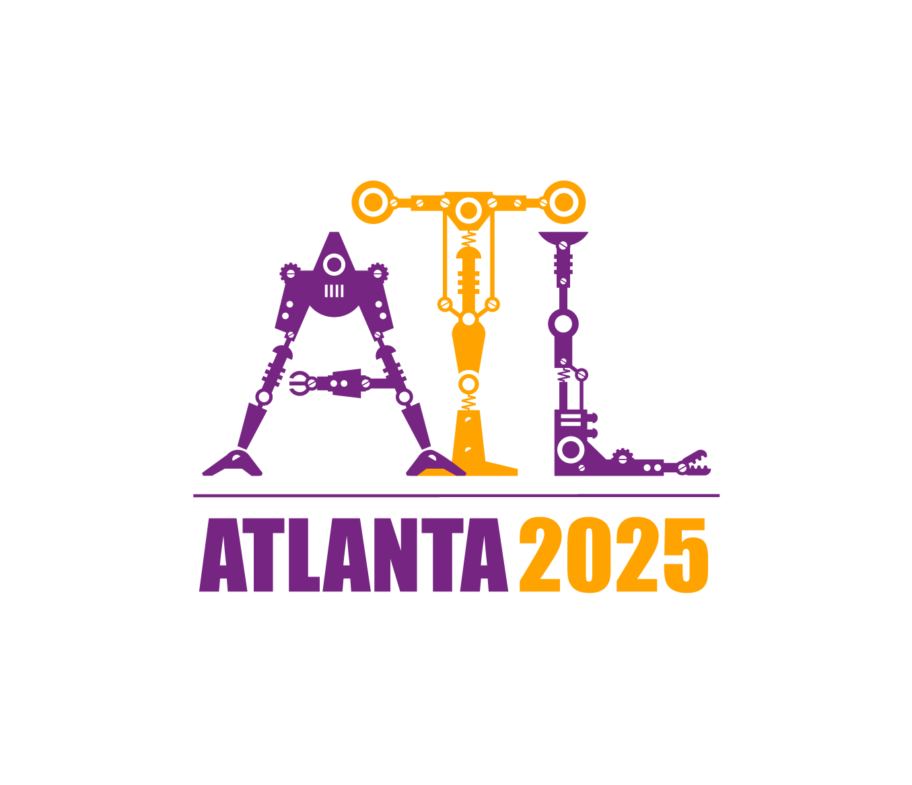
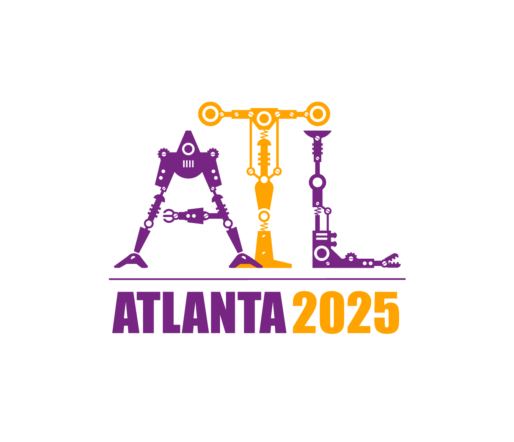
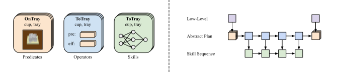

Neuro-Symbolic Policies

In our framework, policies have both symbolic and neural components. The symbolic components consist of predicates that abstract the state-space and operators that define a transition model in the abstract state-space induced by the predicates. Together, predicates and operators define a planning problem in the Planning Domain Definition Language (PDDL) and can be utilized to generate abstract plans. The neural components consist of skills that together enable the execution of abstract plans in the environment. To execute the policy on a given task, we first first abstract the low-level start and goal state using the predicates. Following, an abstract plan is computed using the operators and off-the-shelve planning algorithms. Lastly, the corresponding skill sequence is executed.